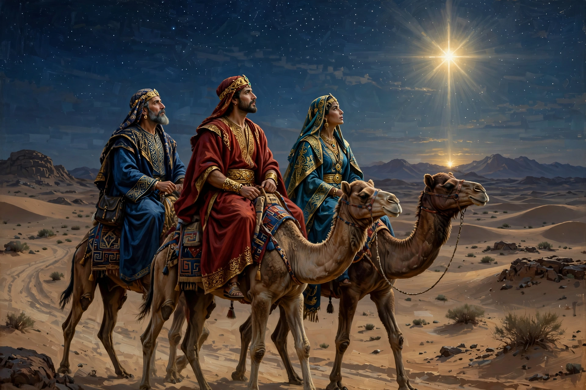

| Biblical Magi | |
|---|---|
 | |
| Also known as | Three Wise Men, Three Kings, Magi |
| Source | Gospel of Matthew, chapter 2 |
| Gifts | Gold, frankincense, myrrh |
| Feast | Epiphany, 6 January (Western Christianity) |
| Traditional names | Melchior, Caspar, Balthazar |
The Biblical Magi, also known as the Three Wise Men or Three Kings, were distinguished foreigners who visited Jesus after his birth, bearing gifts of gold, frankincense, and myrrh. They are described in the Gospel of Matthew, the only one of the four canonical gospels to mention them, which says they came "from the east" to worship "the king of the Jews", following a star to Bethlehem.
Matthew 2 relates that the Magi arrived in Jerusalem, asked King Herod where the child was, and were directed to Bethlehem. Following the star, they found the child with his mother Mary, prostrated themselves, and presented their gifts. Warned in a dream not to return to Herod — who intended to kill the child — they departed for their own country by another route. The account does not state their number, names, or ages; the tradition of three developed because of the three gifts.
In Western Christian tradition from around the 8th century they are named Melchior, Caspar (or Gaspar), and Balthazar, and are often depicted as kings of different ages and, later, as representing Europe, Asia, and Africa. Their supposed relics are venerated in the Shrine of the Three Kings in Cologne Cathedral. Their visit is commemorated at Epiphany on 6 January; in many Spanish-speaking countries, Three Kings' Day is the principal gift-giving occasion of the Christmas season, and children leave out hay or grass for the kings' camels.
Magoi in Greek originally referred to a priestly caste of Persia associated with Zoroastrianism, astrology, and dream interpretation. Many scholars regard the visitors as likely modelled on Persian or Arabian astrologer-priests; Arabia was the source of frankincense and myrrh, two of the gifts, which could equally have been incense offerings of great value.